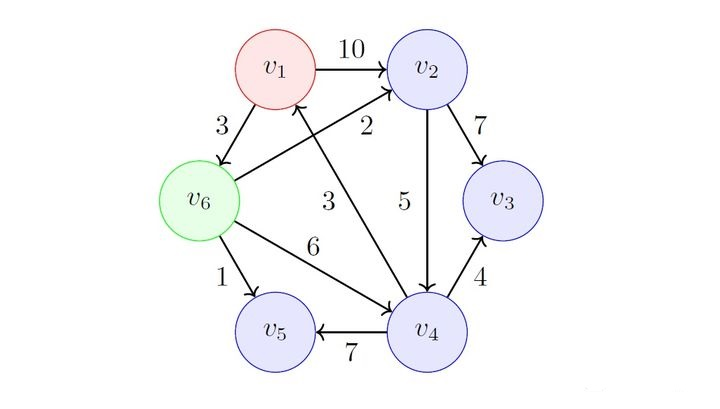

Dijkstra 算法¶
Dijkstra 算法，使用类似广度优先搜索的方法解决加权图的单源最短路径问题，其原始版本仅适用于找到两个顶点之间的最短路径，后来更常见的变体固定了一个顶点作为源结点然后找到该顶点到图中所有其它结点的最短路径，产生一个最短路径树。
问题¶
给定加权有向图 \(G=\{V,E,W\}\)，其顶点集合 \(V=\{v_1,v_2,\cdots,v_n\}\)，每条边 \(e_{i,j}(i\ne j)\) 对应一个权重 \(w_{i,j}(w_{i,j}\ge0)\)，表示从顶点 \(v_i\) 到 \(v_{j}\) 的距离。设一源点 \(v_s\in V\)，求：从 \(v_s\) 出发，到其它顶点的最短路径 \(d_{s,i}(1\le i\le n)\)。
定义¶
- 集合 \(S\) 和 \(S'\)，包括已经确定最短路径的顶点，初始时，\(S=\{v_s\}\)，当且仅当 \(S=V\) 时，算法结束，
- 数组 \(F=\{f_{s,i}\ |\ v_i\in S'\}\)，其中 \(f_{s,i}\) 表示从顶点 \(v_s\) 到 \(v_i\) 的最短路径，且该路径上的所有顶点必须在 \(S\) 中。显然，\(f_{s,i}\ge d_{s,i}\).
设计¶
Dijkstra 算法的思路是，每次从 \(S'\) 中选择到 \(v_s\) 相对最近的顶点加入 \(S\) 中，直至 \(f_{s,i}=d_{s,i},\ S=V\)，具体步骤如下：
初始化，\(S=\{v_s\}\)，
从 \(S'\) 中选择 \(v_k\)，使得 \(f_{s,k}\) 最小，即：
此时 \(d_{s,k}=f_{s,k}\)，即为最短路径（稍后证明），将 \(v_k\) 加入 \(S\)，并更新 \(F\)：
重复第2步和第3步直至 \(S=V\).
以下证明 \(d_{s,k}=f_{s,k}\).
设任意从 \(v_s\) 到 \(v_k\) 的路径 \(p_{s,k}=v_s\to v_{s_{1}}\to v_{s_{2}}\to···\to v_{s_{j}}\to v_k\)，
-
若 \(\{v_{s_{1}},v_{s_{2}},\cdots,v_{s_{j}}\}\subset S\)，\(p_{s,k}\ge f_{s,k}\)；
-
否则 \(\exists\ v_{s_{i}}\in S'\text{ 且 }\{v_{s_{1}},v_{s_{2}},\cdots,v_{s_{i-1}}\}\subset S,\ 1\le i\le j\)，同时，根据式 \((3)\) 有 \(f_{s,k}\le f_{s,s_{i}}\)，那么
因此 \(f_{s,k}\) 为最短路径，即 \(d_{s,k}=f_{s,k}\).
示例¶
给定如图有向图：
初始化 \(S\) 和 \(F\)，有：
其中 \(f_{1,6}=3\) 最小，选择 \(v_6\)，加入 \(S\) 并更新 \(F\)：

其中 \(f_{1,5}=4\) 最小，选择 \(v_5\)，加入 \(S\) 并更新 \(F\)：
其中 \(f_{1,2}=5\) 最小，选择 \(v_2\)，加入 \(S\) 并更新 \(F\)：
其中 \(f_{1,4}=9\) 最小，选择 \(v_4\)，加入 \(S\) 并更新 \(F\)：
最后选择 \(v_3\)，加入 \(S\) 并更新 \(F\)：
实现¶
int[] minDistance(int[][] graph, int n, int s) {
// dist[v]: the distance from s to v
int[] dist = new int[n];
boolean[] visited = new boolean[n];
Arrays.fill(dist, -1);
dist[s] = 0;
for (int i = 1; i < n; i++) {
int min = -1;
for (int v = 0; v < n; v++) {
// choose the nearest vertex from reachable but not visited vertices
if (!visited[v] && dist[v] != -1 && (min == -1 || dist[v] < dist[min])) {
min = v;
}
}
if (min == -1) {
return dist;
}
visited[min] = true;
for (int v = 0; v < n; v++) {
// vertex v is reachable, update its distance to s
if (!visited[v] && graph[min][v] > 0) {
if (dist[v] == -1 || dist[min] + graph[min][v] < dist[v]) {
// a shorter path: s → min → v
dist[v] = dist[min] + graph[min][v];
}
}
}
}
return dist;
}
易知，时间复杂度为 \(O(|V|^2)\).